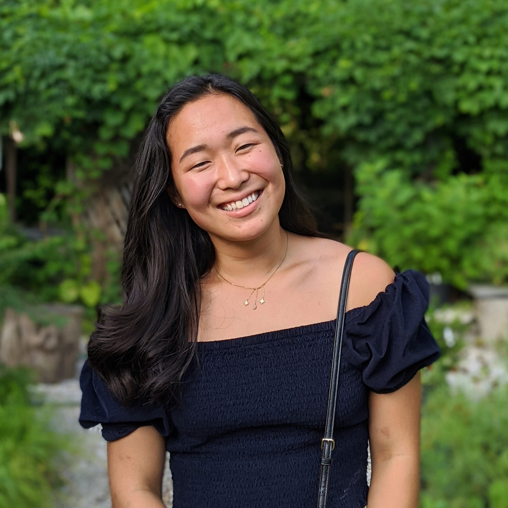

I'm an undergraduate computer science student
at the University of Kentucky (2016 - 2019).
I'm excited about making machine learning robust and actionable, so that it can be applied to real-world challenges in sustainability and medicine.
I'm an undergraduate computer science student
at the University of Kentucky (2016 - 2019).
I'm excited about making machine learning robust and actionable, so that it can be applied to real-world challenges in sustainability and medicine.
(Try refreshing the page). This random landscape generator was my final project for algorithms. I took the popular "Fractal Tree" and randomized it to create more natural patterns.
News
Our paper "Machine Learning in the Wild: The Case of User-Centered Learning in Cyber Physical Systems" was accepted for presentation at COMSNETS 2020
My demo "Robot Assisted Hair Brushing" was accepted for the demonstration track at NeurIPS 2019